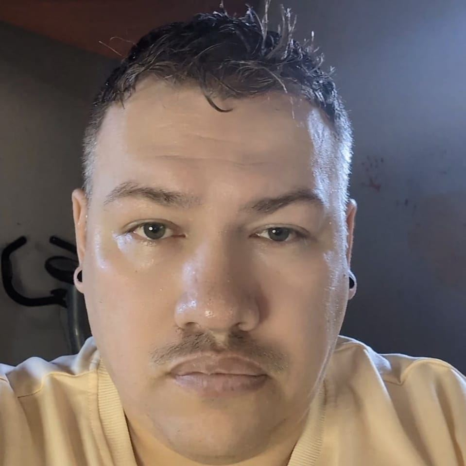

Hans McCarthy

Summary
With a strong background in supporting Indigenous families and youth, I've
excelled in roles from case management at Samson Income Support to educational
support for children with Autism Spectrum Disorder. My education in Native Studies,
Psychology, and Social Work, combines with certifications in crisis intervention,
underpins my commitment to effective communication and advocacy. I thrive on teamwork
and ensuring access to cultural and support services.
Education
- Nonviolent Crisis Intervention 2022
- Three Pillars Training 2022
- Career Competency Certificate for Social Work and ESD Practitioner 2015
- University courses: Native Studies, Psychology, Sociology, etc. 2011
- 2 Year Business Diploma 2006
- Class 5 Drivers License
- QCW and Sell Safe
Work Experience
- Indigenous Engagement Liason Mpower
2022-2023
- Provided support for children and youth in group homes.
- Ensured indigenous children and youth had access to their culture.
- Got to know clients and found out their individual cultural needs.
- Provided counselling supports to clients and staff.
- Educated group home staff about cultural practices.
- Assisted group home staff with their daily duties as needed.
- Case Worker Samson Income Support
2019-2022
- Performed intakes procedures for clients seeking income
support and other available services or benefits
- Documented all activities and conversations in a timely manner
- Managed multiple appointments with families, children,
school personnel, community agencies
- Maintained good working relationships with caseload clients.
- Collaborated with peers and outside resources on best practices to serve families
- Educational Assistant Ma-Me-O Beach School
2019
- Assisting two children with Autistic Spectrum Disorder with tasks in the classroom
- Worked on behavioural interventions
- Modified program when necessary
- Worked with two specialists who provided guidance for programming
Skills
- Experienced Indigenous support worker - background with income
support and family services.
- Familiar with band policies and procedures
- Participate in traditional cultural practices and ceremonies
- Performed intake and maintained individuals records with confidentiality
- Coordinated with other government agencies
- Previously supervised residents at a rehabilitation centre; worked
as an educational assistant
- Enjoy getting people the supports they need
- Excellent communications skills and teamwork approach
Awards
- Dean Scholership Award: Highest overall average in college
Other